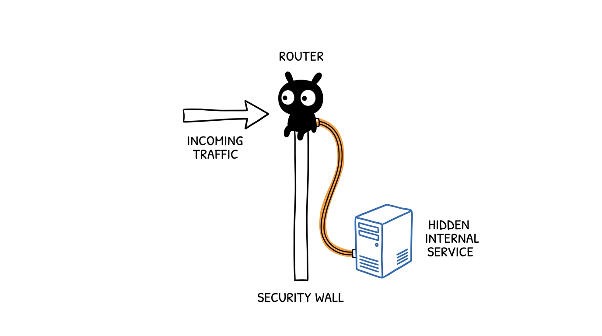
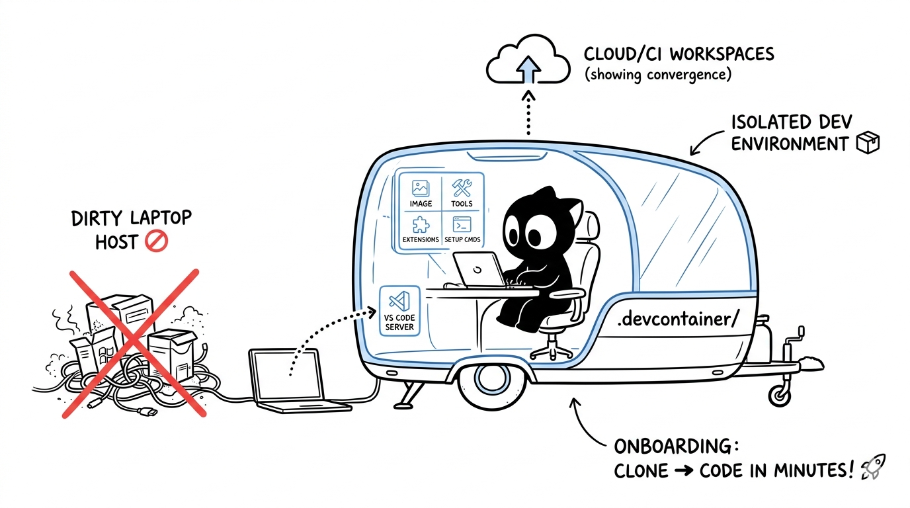
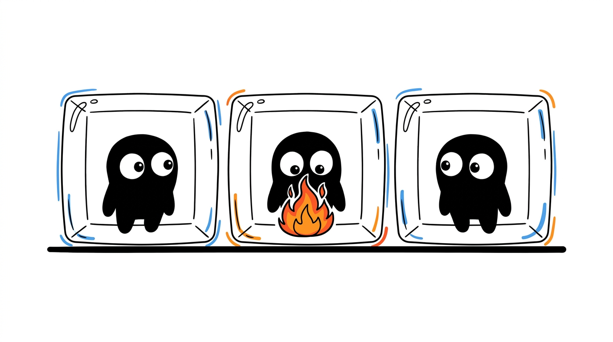

Generative AI vs AI Agents vs Agentic AI: The Brain, the Driver, and the Fleet
A clear, metaphor-driven breakdown of how Generative AI, AI Agents, and Agentic AI differ.
Read more →The notebook / 07 articles
Practical notes on AI, cloud infrastructure and the systems we use every day.
No articles match your search. Try another topic or keyword.
A clear, metaphor-driven breakdown of how Generative AI, AI Agents, and Agentic AI differ.
Read more →
A practical guide to how container escapes happen, how to detect them, and how to harden your workloads.
Read more →
A jargon-free, metaphor-driven guide to how IP addresses, subnets, and CIDR blocks really work.
Read more →
What port forwarding really is, how it works under the hood, and everyday DevOps scenarios where it shines.
Read more →
Understanding what DevContainers are, how they work internally, and why they make development cleaner and faster.
Read more →
How containers stay separated from each other and from the host, and why isolation is the foundation of cloud computing.
Read more →
Using Remote Explorer to work with DevContainers, SSH VMs, and GitHub Codespaces from a single window.
Read more →